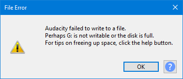
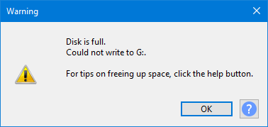
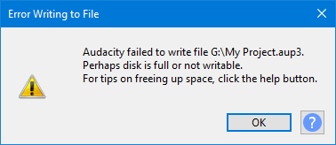
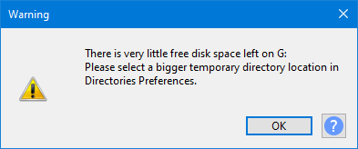

Error: Disk full or not writable
Contents
- Disk is full
- Salvaging your project
- Write-protected files or disks
- Size occupancy
- Low disk space on startup
Disk is full
You get the following error message when you are trying to write to a disk that is full or if the disk or file is write-protected (or you do not have sufficient privileges to access it).
- 
This can happen when you are:
- Recording
- Saving a project
- Exporting from a project
- Importing into a project
- Applying effects
- Editing
Disk full when editing
If your disk is filling up while editing you will see this warning message:
- 
Disk full when Saving a project
If your disk does not have sufficient space to save a project you will see this error message:
- 
Salvaging your project
To avoid losing the project there are three options:
- Free up sufficient space on the disk
- Save the project to a different disk
- If Audacity is already closed, manually copy or move the project to another disk
1) Free up space on the disk
Free up some space on the disk you are working on.
| Do not delete the AUP3, WAL or (Windows only) SHM files for your project as part of this freeing up of space. |
If your project is on your main internal drive, it may be possible to make a significant amount of space simply by emptying the recycle bin (Bin/Trash on Mac).
Further:
- Windows: Just delete unwanted files and or folders with
- Mac: Move files and/or folders to the Bin/Trash then empty the Bin/Trash (). (If you do not empty the BinTrash the space will not actually be freed up.)
- Linux: Use Delete to remove unwanted files and or folders. If your desktop uses "Move to Recycle bin / Wastebasket" this will not actually remove the files from the disk until you empty the recycle bin / wastebasket.
| Do not try to reduce space usage by deleting part of the project in Audacity, this will only try to take up more temporary space on the disk. |
2) Save to a different, bigger, disk
or to a different disk with sufficient space.
You may still need to free up some space on the original disk for this to work, but not as much as for the above option.
3) Copy/Move the project files to a bigger disk
- If the project was previously saved, you may use your operating system's file manager to copy or move the project files: AUP3, WAL (and SHM on Windows) to another disk with sufficient space. Then open the AUP3 project file from there with Audacity and close it to make it complete.
- If the project was not previously saved, you may use your operating system's file manager to copy or move the project temporary files to another disk with sufficient space.
- If Audacity has crashed, the project temporary files may (or may not) still be present and usable.
- Windows: C:\Users\<your username>\AppData\Local\Audacity\SessionData
- macOS /Users/<your username>/Library/Application Support/SessionData
- GNU/Linux: /var/tmp/audacity-<your username>
| Before restarting Audacity, ensure that there is a reasonable amount of disk space on the drive that has Audacity's temporary folder. To recover the project requires significantly more space than the folder that you have just copied. |
To open the project, launch or restart Audacity, then from search for the file with the extension ".aup3unsaved" in the copied folder. After recovery you will need to save the project or export your work.
Write-protected files or disks
It is also possible the the disk or file you are trying to write to is write-protected or you have insufficient privileges to write there.
You will need to change the write-protection to enable the file to be written but that assumes that you have sufficient privileges to do that.
Size occupancy
As a guideline, one hour of stereo recording at default settings (44.1kHz, 32-bit) occupies approximately 1.2 GB of disk space
Low disk space on startup
Audacity will warn on start up or when using to create a new project if you have 100 MB or less space in the temporary folder for recording or editing.
100MB is approximately 5 minutes of stereo audio or 10 minutes of mono audio at default settings.
- 
This means that you are very low on disk space on the volume that holds your temporary Audacity work files (by default that is the system disk).
You either need to free up space on that volume or reset your temporary file storage be on a different volume with Directories Preferences.